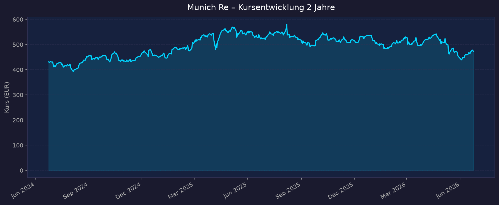
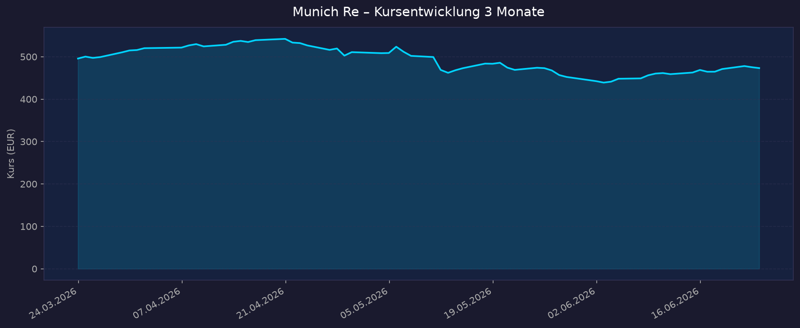

📈 1. Kursentwicklung
Aktueller Kurs: 473,20 EUR | Veränderung heute: −0,44% (Xetra, 23.06.2026)
52-Wochen-Hoch: 611,80 EUR | 52-Wochen-Tief: 437,40 EUR
52W-Abstand zum Hoch: −22,6% | Marktkapitalisierung: ~60,6 Mrd. EUR
📌 Interaktiver Chart: TradingView – XETR:MUV2
Chart – 2 Jahre

Chart – 3 Monate

| Zeitraum | Kurs Start | Kurs Ende | Veränderung |
|---|---|---|---|
| 2 Jahre (Jun 2024 → Jun 2026) | 430,99 EUR | 473,20 EUR | +9,8% |
| 3 Monate (Mär 2026 → Jun 2026) | 495,73 EUR | 473,20 EUR | −4,5% |
| 52-Wochen-Hoch | — | 611,80 EUR | — |
| 52-Wochen-Tief | — | 437,40 EUR | — |
Kurskommentar: Der Kurs liegt aktuell rund 23% unter dem 52-Wochen-Hoch vom Herbst 2025. Nach einem starken Anstieg bis ~612 EUR brach die Aktie ab Mai 2026 deutlich ein, als Bedenken über sinkende Rückversicherungspreise (−15 bis −20% in Property-Cat bei den Juni-Renewals) die Rekordergebnisse des Q1 2026 überschatteten. Jahr-zu-dato (YTD 2026) beläuft sich das Minus auf ca. −17,5%.
💹 2. KGV-Entwicklung (Kurs-Gewinn-Verhältnis)
Aktuelles KGV (trailing): 9,06 | Forward KGV: 9,02
EPS (ttm): 52,24 EUR | Beta: 0,34 (sehr defensiv)
| Zeitraum | KGV | Einordnung |
|---|---|---|
| Aktuell (Jun 2026) | 9,1x | Deutlich unter historischem Schnitt |
| vor 3 Monaten (Mär 2026) | ~11,5x | Nahe historischer Norm |
| vor 12 Monaten (Jun 2025) | ~13,0x | Leicht erhöhte Bewertung (Rekordlauf) |
| vor 24 Monaten (Jun 2024) | ~11,1x | Moderat |
| FY 2023 | 10,3x | Historisches Mittel |
| FY 2024 | 11,1x | Leicht über Mittel |
Branchenvergleich: Rückversicherer handeln typischerweise zu 9–14x KGV. Munich Re liegt aktuell am unteren Ende dieser Bandbreite, was auf eine Neubewertung durch den Rückversicherungspreiszyklus zurückzuführen ist.
Bewertung: Das KGV von 9,1x ist historisch günstig und liegt unter dem 5-Jahres-Durchschnitt (~11–12x). Die Expansion auf 13x Anfang 2026 war ambitioniert; der aktuelle Rückgang bietet eine potenziell attraktive Einstiegsbewertung, sofern die Gewinnentwicklung robust bleibt.
💰 3. Bewertung: KBV & P/S
Aktuelles KBV (Kurs-Buchwert-Verhältnis): 1,75x
Aktuelles P/S (Kurs-Umsatz-Verhältnis): 0,99x
| Zeitraum | KBV | P/S Ratio | Einordnung |
|---|---|---|---|
| Aktuell (Jun 2026) | 1,75x | 0,99x | KBV leicht unter Mittel |
| vor 12 Monaten | ~2,0–2,1x | ~1,1x | Höhere Bewertung |
| vor 24 Monaten | ~1,7x | ~0,9x | Ähnlich wie heute |
KBV-Einschätzung: Ein KBV unter 2x bei einem ROE von ~19–20% ist für Versicherungsunternehmen attraktiv (Faustformel: KBV ≈ ROE ÷ Eigenkapitalkosten). Bei einem ROE von 20% und angenommenen Eigenkapitalkosten von ~9–10% wäre ein faires KBV von ~2,0–2,2x gerechtfertigt — die Aktie handelt also leicht unterbewertet auf KBV-Basis.
P/S unter 1x: Für ein profitables Versicherungskonglomerat mit rund 60 Mrd. EUR Marktkapitalisierung und einem Versicherungsumsatz von ~60+ Mrd. EUR ist ein P/S von 0,99x sehr günstig.
💵 4. Dividende & Kapitalrückführung
Dividende 2025 (gezahlt Mai 2026): 24,00 EUR je Aktie (+20% ggü. Vorjahr)
Dividendenrendite: ~5,05% (auf Basis 473,20 EUR)
Ausschüttungsquote: 38,3% (des Nettogewinns 2025)
Return on Equity: 19,85%
Dividendenhistorie
| Geschäftsjahr | Dividende je Aktie | Veränderung |
|---|---|---|
| 2025 | 24,00 EUR | +20,0% |
| 2024 | 20,00 EUR | +33,3% |
| 2023 | 15,00 EUR | +25,0% |
| 2022 | 11,00 EUR | +10,0% |
| 2021 | 10,00 EUR | (Basis) |
Dividenden-Aristokrat: Munich Re hat die Dividende seit Jahrzehnten nie gesenkt — eine der konstantesten Dividendenhistorien unter deutschen Großunternehmen.
Aktienrückkäufe (Buyback-Programme)
| Programm | Volumen | Zeitraum |
|---|---|---|
| Laufendes Programm | 2.250 Mio. EUR | Apr 2026 – Apr 2027 |
| Vorherige Programme | Mehrfach je ~1–2 Mrd. EUR | Regelmäßig seit 2021 |
Gesamte Kapitalrückführung 2026 (Dividende + Buyback): ~5,3 Mrd. EUR
Kapitalrückführungs-Nachhaltigkeit
Ambition 2030 Zielsetzung: Gesamtausschüttungsquote >80% pro Jahr; EPS-Wachstum >8% p.a. im Schnitt bis 2030; ROE >18%.
Einschätzung: Die Kombination aus hoher Dividendenrendite (~5%), laufenden Aktienrückkäufen und klarer Steigerungshistorie macht Munich Re zu einem der attraktivsten "Total-Return"-Titel im DAX. Die Ausschüttungsquote von 38% bietet noch reichlich Puffer. Solvency-II-Quote von 292% (Q1 2026) gibt volle Kapitalflexibilität.
📊 5. Handelsvolumen
| Zeitraum | Ø Tagesvolumen | Auffälligkeiten |
|---|---|---|
| 10-Tage-Durchschnitt | ~406.000 Aktien | Erhöht (Preisdruck-Diskussion) |
| 3-Monats-Durchschnitt | ~360.000 Aktien | Normal |
| Aktuelles Volumen (23.06.) | ~37.200 Aktien | Ruhiger Handelstag |
Volumentrend: Das Handelsvolumen war nach den Q1-2026-Ergebnissen (12. Mai 2026) und dem anschließenden Kurssturz auf das 52-Wochen-Tief (~452,80 EUR) deutlich erhöht, was auf institutionelle Umschichtungen hindeutet. Seitdem beruhigung.
🏦 6. Insider / Directors' Dealings
| Datum | Name | Funktion | Kauf/Verkauf | Aktien | Wert (EUR) |
|---|---|---|---|---|---|
| Mai 2026 | Nicht namentlich publiziert | Führungskraft | Kauf | k. A. | ~198.000 EUR |
| April 2025 | Nathalie Haidegger-Rieß | Person in nahem Verhältnis | Kauf | 180 Aktien | k. A. |
Hinweis: Ab 1. Januar 2026 hat BaFin die Meldepflicht-Schwelle für Directors' Dealings von 20.000 EUR auf 50.000 EUR je Kalenderjahr angehoben (Listing Act). Dies reduziert die Anzahl gemeldeter Transaktionen.
3-Monats-Überblick: Netto-Käufe in kleinem Umfang — ein Führungskraft-Investment von ~198.000 EUR im Mai 2026 signalisiert internes Vertrauen trotz Kursrückgang.
Gesamttrend: Begrenzte Datenlage; keine auffälligen Großverkäufe durch Insider erkennbar. Die verfügbaren Transaktionen deuten eher auf Käufe hin.
Quelle: BaFin-Datenbank, Munich Re Pflichtmitteilungen, Finanzen.net
🩳 7. Short-Positionen
Status: Begrenzt verfügbar aus öffentlichen Quellen
| Zeitraum | Short Interest | Veränderung |
|---|---|---|
| Aktuell (Jun 2026) | nicht verfügbar | — |
| Trend | Wahrscheinlich leicht erhöht | Nach Preisdruck-Debatte |
Einschätzung: Munich Re ist eine Blue-Chip-Aktie im DAX mit sehr stabilem Geschäftsmodell. Signifikante Leerverkaufspositionen wären ungewöhnlich. Angesichts der Neubewertungsdebatte (Rückversicherungspreiszyklus, Juni-Renewals −15 bis −20%) könnten kurzfristig taktische Short-Positionen bestehen. Bundesanzeiger-Daten zur Netto-Leerverkaufsquote sind direkt abzurufen unter bundesanzeiger.de.
🗞️ 8. Aktuelle Nachrichten (Juni 2026)
| Datum | Quelle | Nachricht | Relevanz |
|---|---|---|---|
| Jun 2026 | ad-hoc-news | Hurrikan-Saison 2026: Munich Re erwartet ruhigere Atlantik-Saison, aber steigende Taifun-Risiken im Pazifik | Hoch |
| Jun 2026 | ad-hoc-news | Kurslücke zum 52W-Hoch: Aktie hinkt DAX-Versicherern hinterher; schwache Wochenbilanz | Mittel |
| Jun 2026 | Howden Re | Property-Cat Rückversicherungspreise fallen −15% bis −20% bei Juni-Renewals 2026 | Sehr Hoch |
| Mai 2026 | Munich Re | Q1 2026: Nettoergebnis +57% auf 1,714 Mrd. EUR; Guidance 6,3 Mrd. EUR bestätigt | Sehr Hoch |
| Mai 2026 | ad-hoc-news | Kurssturz nach Q1-Zahlen: Aktie fällt trotz Rekordgewinn auf 52W-Tief ~452,80 EUR (−17,5% YTD) | Hoch |
| Apr 2026 | Munich Re | April-Renewals: Prämienvolumen −18,5% auf 2,0 Mrd. EUR — disziplinierter Rückzug aus unattraktiven Risiken | Hoch |
| Feb 2026 | Munich Re | FY2025-Ergebnisse: Nettogewinn 6,121 Mrd. EUR (>6 Mrd. Ziel übertroffen); Dividende 24 EUR (+20%) | Sehr Hoch |
| Jan 2026 | Reinsurance News | Januar-Renewals 2026: Risikobereinigt −0 bis −2%; erstes Minus seit 2017 — Ende des Hardening-Zyklus | Sehr Hoch |
Sentiment: Gemischt-negativ (kurz-/mittelfristig) — Rekordergebnisse werden durch strukturellen Preisdruck im Rückversicherungsmarkt überschattet. Analysten sehen mittelfristig Potenzial (Ø-Kursziel 550–595 EUR).
📋 9. Letzte 3 Quartalsberichte
Q1 2026 (veröffentlicht 12. Mai 2026)
| Kennzahl | Ist | Erwartung | Abweichung |
|---|---|---|---|
| Versicherungsumsatz | 15,0 Mrd. EUR | ~15,8 Mrd. EUR | −5,1% |
| Net Income | 1.714 Mio. EUR | ~1.400 Mio. EUR | +22,4% Beat |
| EPS | ~13,40 EUR* | — | — |
| Combined Ratio P&C Reins. | 66,8% (normalisiert 80,3%) | ~83–85% | Sehr stark |
| Combined Ratio ERGO D | 86,7% | — | — |
| Solvency-II-Quote | 292% | >200% | Sehr solide |
| Kapitalanlageergebnis | 1,7 Mrd. EUR | — | — |
| ROE (annualisiert) | 19,7% | — | — |
Guidance 2026: 6,3 Mrd. EUR Nettoergebnis unverändert bestätigt
Kursreaktion: −14% über 30 Tage nach Bekanntgabe; 52W-Tief 452,80 EUR — Markt fokussiert auf Preisdruck bei Renewals trotz Rekordgewinn
*EPS-Schätzung auf Basis ~128 Mio. Aktien
Q4 2025 / FY2025 (veröffentlicht 26. Februar 2026)
| Kennzahl | Ist | Erwartung | Abweichung |
|---|---|---|---|
| Versicherungsumsatz (FY) | ~57–60 Mrd. EUR | — | — |
| Net Income FY2025 | 6.121 Mio. EUR | 6.000 Mio. EUR | +2,0% Beat |
| Net Income Q4 2025 | 945 Mio. EUR | — | — |
| EPS (FY2025) | 47,15 EUR | ~42,90 EUR | +9,9% |
| Combined Ratio P&C Reins. (FY) | 73,5% | ~85% | Hervorragend |
| Solvency-II-Quote | 298% | >175% (alt) | Sehr solide |
| ROE (FY2025) | 18,3% | — | — |
Guidance 2026: 6,3 Mrd. EUR Nettogewinn; Versicherungsumsatz 64 Mrd. EUR; ROI >3,5%
Kursreaktion: Positiv; Kurs nahe Jahreshoch. Dividendenerhöhung auf 24 EUR (+20%) und Buyback 2,25 Mrd. EUR angekündigt
Q3 2025 (veröffentlicht Nov. 2025)
| Kennzahl | Ist | Erwartung | Abweichung |
|---|---|---|---|
| Net Income Q3 2025 | 1.997 Mio. EUR | ~1.500 Mio. EUR | +33% Beat |
| Net Income 9M 2025 | 5.176 Mio. EUR | 4.500 Mio. EUR | — |
| EPS (9M 2025) | ~40,4 EUR* | — | — |
| Combined Ratio P&C Reins. Q3 | 62,7% (normalisiert ~88,7%) | ~86% | Sehr stark |
| ROE (annualisiert 9M) | 20,8% | — | — |
Guidance: 6,0 Mrd. EUR Jahresergebnis bestätigt (letztlich auf 6,121 Mrd. übertroffen)
Kursreaktion: Positiv — Aktie näherte sich dem Allzeithoch
*EPS-Schätzung auf Basis ~128 Mio. Aktien
🌍 10. Marktkontext & Wettbewerb
Globaler Rückversicherungsmarkt 2025/2026
Der globale Rückversicherungsmarkt hat sich nach den Schockereignissen 2017–2022 (Naturkatastrophen-Rekorde) in einen ausgeprägten Hardening-Zyklus bewegt, der von 2022 bis Ende 2025 anhielt. Die Januar-2026-Renewals markierten erstmals seit 2017 einen risikobereinigten Preisrückgang von 0–2%. Bei den April- und Juni-2026-Renewals verstärkte sich die Preisschwäche: Property-Cat −15% bis −20%.
Marktgröße (TAM): Globale Rückversicherungsprämien ca. 472–621 Mrd. USD (2025, je nach Abgrenzung L&H + P&C); Wachstum ~6–10% p.a. bis 2030. Gesamtkapital des Marktes: >700 Mrd. USD inkl. ILS/Alternativer.
Munich Re Marktposition
Munich Re ist nach IFRS 17-Basis #1 weltweit (AM Best Top 50). Nach S&P Global-Methodik (alle Rechnungslegungsstandards) auf Rang #2 knapp hinter Swiss Re. Marktanteil: >13,7%. 2025-Prämienvolumen: ~44–45 Mrd. EUR.
Wettbewerber-Vergleich
| Unternehmen | KGV (2026e) | Combined Ratio P&C (FY25) | ROE (2025) | Solvency II / Rating |
|---|---|---|---|---|
| Munich Re (MUV2) | 9,1x | 73,5% | 19,8% | 292% / AA− S&P |
| Swiss Re (SREN.SW) | ~10,5x | 79,4% (H1) | 23,0% (H1) | ~264% (SST) |
| Hannover Re (HNR1.DE) | ~11,4x | 84,0% | ~19% | ~280% |
| SCOR SE (SCR.PA) | ~6,5x | n.v. | ~2% (Einbruch) | ~200% |
| Berkshire (BRK) | ~22x | n.v. | ~15% | k.A. |
Hinweis SCOR: Massiver Gewinneinbruch 2025 auf ~€4 Mio. Nettoergebnis wegen €348 Mio. Verlust im L&H-Segment — strukturelles Problem. Peer-Gruppe (EU Big 4) erzielte 2025 durchschnittlich 19,6% ROE.
Fazit: Munich Re führt beim Combined Ratio mit Abstand (73,5% vs. 79,4% Swiss Re) und liegt beim KGV am unteren Ende der Peer-Gruppe, was eine relative Unterbewertung signalisiert.
Branchentrends 2025/2026
- Reinsurance Preiszyklus — Ende des Hardenings: Risikobereinigt: Januar 2026 −14,7%, April 2026 −3,1%, Juni 2026 −15% bis −20% (Property-Cat). Munich Re reagiert diszipliniert: Volumenreduzierung bei unattraktiven Risiken (−18,5% im April).
- Klimawandel & Naturkatastrophen: Versicherte NatCat-Schäden 2025 = 107 Mrd. USD (6. Jahr in Folge >100 Mrd. USD). 92% der Schäden = Secondary Perils (Hagelstürme, Waldbrände, Überschwemmungen). LA-Waldbrände 2025: USD 40 Mrd. versichert — Rekord. Strukturell steigende Nachfrage nach Rückversicherung.
- Cyber-Rückversicherung: Globaler Cyber-Markt 2025: ~15 Mrd. USD; CAGR ~15% bis 2030 auf ~28 Mrd. USD. Munich Re ist Marktführer. 90% des Cyber-Risikos weltweit noch unversichert. KI-Risiken wachsen (+9 Prozentpunkte C-Level-Bedenken 2026 vs. 2024).
- Zinsumfeld: EZB-Leitzins ~2,5%. Reinvestitionsrendite Munich Re 4,1%, Kapitalanlageergebnis FY2025: €7,514 Mrd. Kapitalanlageergebnis Q1 2026: 2,9% Return p.a.
- Ambition 2030: EPS-Wachstum >8% p.a., ROE >18%, Ausschüttungsquote >80%, €600 Mio. Kosteneinsparungen. L&H + ERGO + GSI sollen auf ~60% Ergebnisbeitrag wachsen (von ~50% heute).
Segmentbeitrag 2025 (Munich Re Konzern)
| Segment | Nettoergebnis 2025 | Anteil |
|---|---|---|
| P&C Rückversicherung | 3.308 Mio. EUR | 54,1% |
| L&H Rückversicherung | 1.334 Mio. EUR | 21,8% |
| Global Specialty Insurance (GSI) | 562 Mio. EUR | 9,2% |
| ERGO Erstversicherung | 917 Mio. EUR | 15,0% |
| Gesamt | 6.121 Mio. EUR | 100% |
Risiken
- Soft Market 2026–2028: Property-Cat-Raten −15% bis −20% bei 2026-Renewals; Prämienvolumen bereits leicht rückläufig (€38,7 Mrd. vs. €40,0 Mrd. 2024)
- Großkatastrophe (Tail Risk): Ein Mega-Hurricane oder kombiniertes Katastrophenjahr (wie 2017) könnte das Ergebnis erheblich belasten (Q1 2025: NatCat-Aufwand 1+ Mrd. EUR vs. 108 Mio. EUR in Q1 2026)
- Regulierung: IAIS ICS (International Capital Standard), CSRD/EU-Taxonomie, ESG-Berichtspflichten
- Inflation / Social Inflation: Steigende Schadenskosten (USA-Klagewellen, Baukosten) können die Combined Ratio verschlechtern
- Geopolitik: US-Handelspolitik, Iran-Konflikt, Ukraine — erhöhte wirtschaftliche Unsicherheit
- Kapitalanlagerisiko: Zinsänderungs- und Kreditausfallrisiken im ~250 Mrd. EUR-Portfolio
🧮 11. Value-Bewertungsmatrix
| Kriterium | Gewicht | Punkte | Begründung |
|---|---|---|---|
| 💰 Bewertung (KGV/KBV vs. Historie & Peers) | 25% | 8/10 | KGV 9,1x historisch günstig (Ø ~11–12x); KBV 1,75x unter Fair Value (~2,0–2,2x); P/S 0,99x unter 1x — klare Unterbewertung vs. Peergroup |
| 💵 Dividende & Kapitalrückführung | 25% | 9/10 | Dividendenrendite ~5%; Aristokrat ohne Kürzung seit Jahrzehnten; +20% Erhöhung FY25; 2,25 Mrd. EUR Buyback; Total Payout >5 Mrd. EUR — herausragend im DAX |
| 🛡️ Bilanzstärke & Stabilität (Solvency II, Rating, Combined Ratio) | 20% | 9/10 | Solvency II 292% (Q1 2026) — weit über Minimum; AA− S&P Rating; Combined Ratio 73,5% (weltbeste unter Großrückversicherern); 5 Jahre in Folge Guidance übertroffen |
| 📈 Gewinnqualität & Wachstum (EPS-Wachstum, ROE) | 15% | 8/10 | EPS +9,9% 2025 (42,93→47,15); ROE 19,8%; Guidance 6,3 Mrd. EUR 2026 (+3%); Ambition 2030: EPS +8% p.a. — solides, strukturelles Wachstum |
| ⚡ Katalysatoren & Risiken | 15% | 6/10 | Rückversicherungspreiszyklus Soft-Phase ist kurzfristiger Headwind; ruhigere NatCat-Saison 2026 als Katalysator; mittelfristig attraktiv — aber Soft-Market-Risiko drückt Score |
| Gesamt (gewichtet) | 8,1/10 |
Detailrechnung:
- 25% × 8 = 2,00
- 25% × 9 = 2,25
- 20% × 9 = 1,80
- 15% × 8 = 1,20
- 15% × 6 = 0,90
- Summe: 8,15 ≈ 8,1/10
5-Jahres-Szenario 2031
Basis-Annahmen:
- EPS-Wachstum laut Ambition 2030: >8% p.a.
- Dividendenwachstum: ~10% p.a. (konservativ)
- Dividendenbeitrag über 5 Jahre: ~135–155 EUR (kumuliert, ohne Reinvestition)
| Szenario | Kurs 2031 | Rendite ab 473 EUR | + Dividenden (kum.) | Gesamtrendite |
|---|---|---|---|---|
| 🐻 Bär | 380 EUR | −20% | +120 EUR | +5% |
| 📊 Base | 580 EUR | +23% | +140 EUR | +52% |
| 🐂 Bull | 720 EUR | +52% | +155 EUR | +85% |
Annahmen Bär: Anhaltender Soft Market, höhere NatCat-Kosten, KGV-Kompression auf 8x
Annahmen Base: EPS 2031 ~75 EUR bei 8% Wachstum, KGV 9–10x
Annahmen Bull: EPS 2031 ~82 EUR (+11% p.a.), KGV-Expansion auf 12x, Cyber/Spezialität als Wachstumstreiber
📝 Gesamteinschätzung
Stärken:
- Weltweiter Marktführer in der Rückversicherung mit außerordentlichem Combined Ratio (73,5% FY2025)
- Dividenden-Aristokrat mit ~5% Rendite und klarer Steigerungshistorie (+20% in 2026)
- Solvency-II-Quote 292% — außerordentlich starke Kapitalisierung mit Flexibilität für Buybacks
- EPS-Wachstum >8% p.a. als Ambition-2030-Ziel und fünf Jahre in Folge Guidance übertroffen
- Günstiges KGV (9,1x) und KBV (1,75x) bieten Margin of Safety
Risiken:
- Reinsurance Soft-Market-Zyklus 2026–2028: −15 bis −20% Preisverluste bei Juni-Renewals belasten künftige Margen
- Megakatastrophen-Tail-Risk: Ein Extremjahr kann Ergebnisse erheblich belasten (wie Q1 2025 vs. Q1 2026 zeigt)
- Inflation & Social Inflation (USA): Steigende Schadenskosten können die hervorragende Combined Ratio verschlechtern
Fazit: Munich Re kombiniert Weltmarktführerschaft, außerordentliche Kapitalstärke und eine der attraktivsten Dividendenrenditen im DAX. Die aktuelle Bewertung (KGV 9,1x) erscheint historisch günstig und bietet bei einem Analystenmedian-Kursziel von 557 EUR ein Aufwärtspotenzial von ~18%. Der kurzfristige Headwind durch sinkende Rückversicherungspreise ist real, wird jedoch durch diszipliniertes Underwriting und Diversifikation (ERGO, Cyber, L&H) abgefedert. Langfristig (Ambition 2030) bleibt die Investitionsthese überzeugend: strukturelles EPS-Wachstum + hohe Kapitalrückführung + defensives Beta von 0,34.
Datenquellen: Yahoo Finance/yfinance · Munich Re IR (munichre.com) · Reinsurance News · MarketScreener · Finanzen.net · BaFin Directors' Dealings · companiesmarketcap.com · Insurance Business Magazine · ad-hoc-news.de · aktien.guide · Ambition 2030 Investorentag Dez 2025
Keine Anlageberatung — rein informative Auswertung öffentlich verfügbarer Daten. Stand: 2026-06-24.